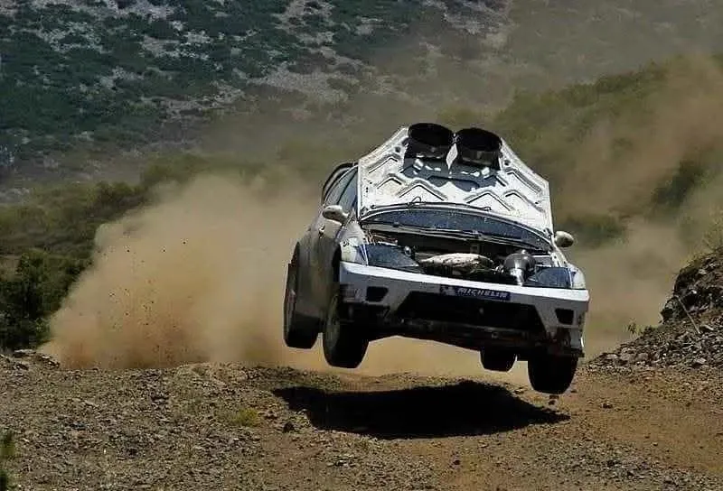
Route History of the Acropolis Rally Part 4: 1996-2005
The Acropolis Rally returned to the WRC calendar in 1996, and its route would undergo significant changes in the following years. Iconic stages like Makrirahi and Tarzan would make way for others like Pavliani and Eleftherohori, as the rally became more and more compact.
1996-1998: Service Parks are mandated
The Acropolis Rally returned to the WRC calendar in 1996, undergoing a major route overhaul. For the first time, the event was under 500km in stage distance, with a total of just over 1100km. This was due to new FIA regulations limiting events to three days and requiring designated service areas, eliminating roadside service.
This compact route saw the rally focus on stages in mostly Viotia and Fthiotida, with no stages in Itea or much further north than Lamia. This meant that there were notable omissions from the event’s itinerary, namely, Bauxites, Karoutes, Tarzan, and Makrirahi. It would be the first edition of the rally in the WRC to not visit any of these four stages.
The rally would start on Sunday and feature eight stages, six of which were in Viotia, around the Elikonas mountain. The first test would be a 26km stage, which was a combination of the Panagia and Evangelistria stages from 1994. The second stage, Elikonas, would be just after a short liaison and would be run for the first time. It would not share any sections with the older stage, and was fast and flowing in the beginning, becoming slower and more technical as it entered the forest.
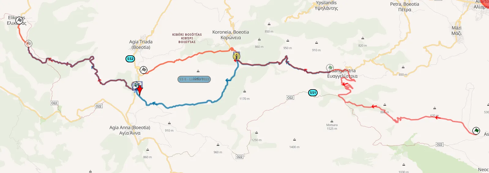
Panagia - Evangelistria and Elikonas (red), compared with the modern Livadia stage (blue)
Rally-Maps.com
Analipsi was another new stage just south of Livadia, where the crews would then head to, for service. After service, a pass through SS Livadia would lead the crews to Zemeno, which would be run in two different configurations, using both the start and the finish of the old Distomo stage. The first pass of Stiri would be annulled due to fans blocking the stage and making cars follow a different path.
After another stop in Livadia for service, the crews would head north for two new stages, Exarchos and Zeli. Zeli would start from the village with the same name, and then join the route of the Elatia stage.
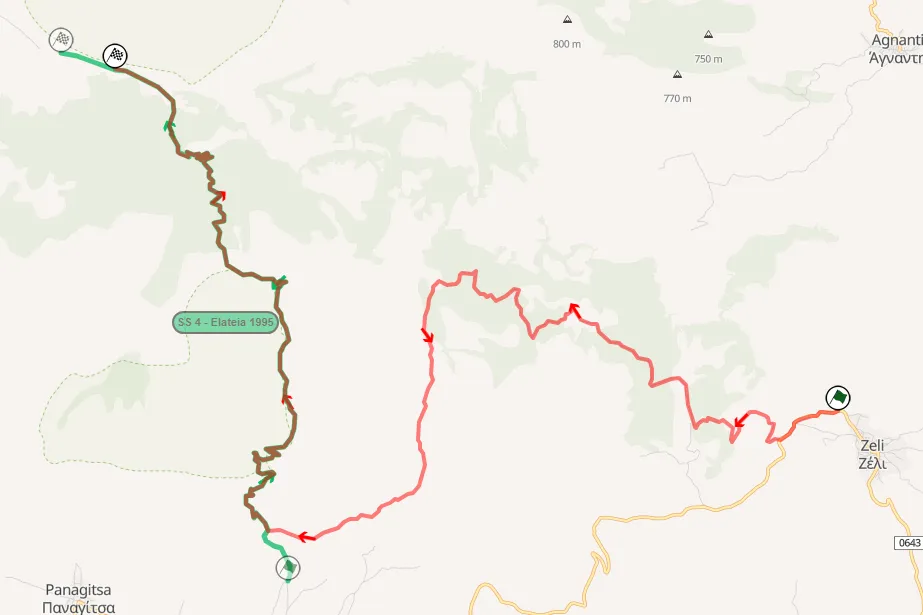
Zeli (red) and Elatia (green)
Rally-Maps.com
Day 2 would start with two new stages just north of Lamia, Limogardi, and Longitsi. Both were technical, with many uphill hairpins. SS Kalamaki would also be new, and would feature a series of jumps after the village with the same name.
After service, there would be two tests, Marmara and Mavrolithari. Marmara was the modern-day Dafni stage only in reverse, and also using now paved sections, whereas Mavrolithari was the Pavliani stage in reverse.
In 1996, there would be a total of three stages in the Kallidromon mountain, where the Eleftherohori stage was located, some sharing sections with one another.
Eleftherohori started from the village and finished in Paleohori. Drimea would be a long 32.25km test, with a very rough and rocky section with hairpins, after which it would join the route of the “classic” Eleftherohori, including the lake section, finishing after a technical downhill section near Anavra. Paleohori would be the reverse of “New Eleftherohori” from 1994, starting from Paleohori and finishing in Mendenitsa.
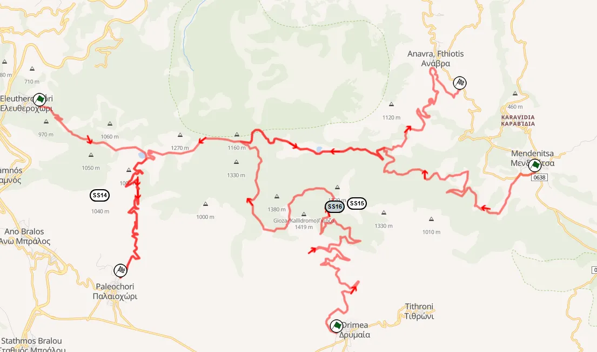
Eleftherohori, Paleohori and Drimea from 1996
Rally-Maps.com
The last day of the rally would feature the merged Kaloskopi stage, starting from Stromi and finishing at Inohori, and also the 24km Gravia stage for the first time. Kaloskopi was narrow and technical, then became fast as it went downhill before the village, then entered the cedar forest before Inohori. The other new stage would start from Gravia and finish in Eptalofos, and was quite narrow and technical, with the section towards the finish being wider and faster. In 1996, the Aluminium stage returned as the longest test of the rally. It featured a significant number of hairpin turns and finished in Kyriaki.
For 1997, the first year of the World Rally Cars, the event would be shortened further to just 400km of stages. Anavissos would return, running as the pre-event shakedown.
Day 1 would be similar to 1996, with SS Ipsilantis being new, parts of which were on tarmac with Freddy Loix rolling out in one of them, 2.5km into the stage. Evangelistria would be merged with Elikonas for 1997.
Stiri would be run on the first leg, and parts of Aluminium would be run as part of the Distomo stage, which did not share any roads with the stage with the same name from the 80s.
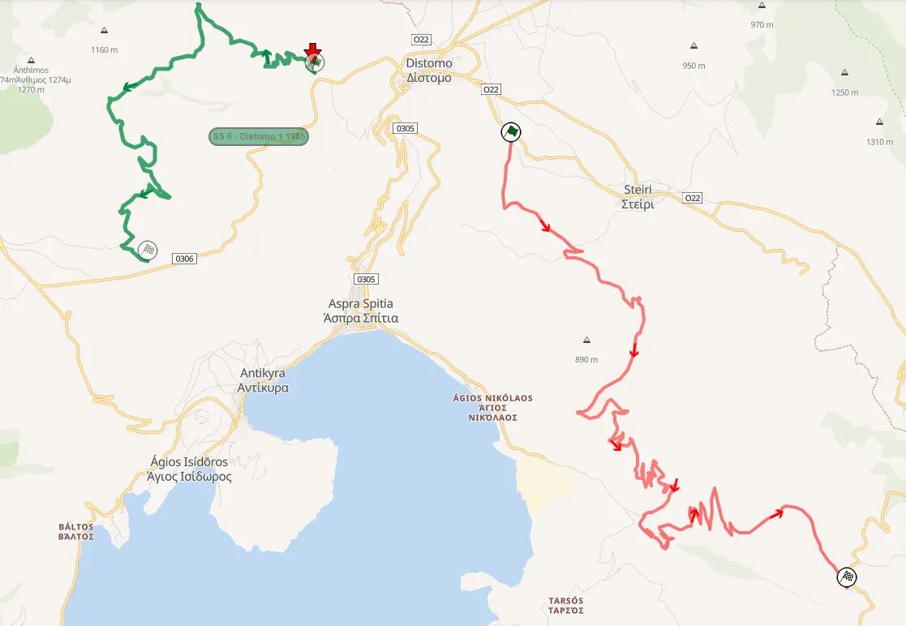
Distomo (red), compared with the classic version of the stage (green)
Rally-Maps.com
After a pass through Dionissos (Exarchos with a new start) and Zeli, the crews would make it to Kamena Vourla for the overnight halt.
Day 2 saw Limogardi and Longitsi ditched for Makrirahi and Perivoli. Makrirahi had a new finish, ending at Loutra Kaitsas, not Anavra. This would be the last time the stage would be part of the Acropolis Rally, with the area now being part of the Smokovo lake, which was created to better irrigate parts of the Thessaly plain. It was a sad end for one of the rally’s most historic stages, with parts of it also being destroyed for the creation of the national highway, and others being paved in later years.
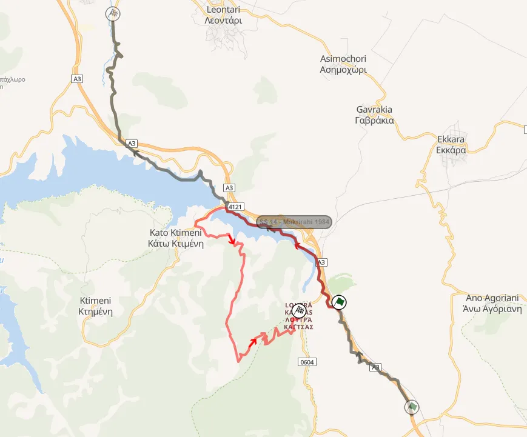
Makrirahi (red), compared with the classic stage (brown)
Rally-Maps.com
After service at Loutra Ipatis, two new stages would feature instead of Marmara and Mavrolithari, Dilofo and Kloni, none of which would be used again, because they had little to nothing interesting about them.
There would be two stages in Kallidromo, with Eleftherohori and Drimea being the same as in 1997.
The last day again saw Gravia and Zemeno, as well as a second pass of Distomo, with Kiriaki also used, a stage that used parts of the old Prodromos stage, last used in the 80s. Karakolithos returned and again shared most of its route with Stiri, with a second pass through Analipsi being the last of the rally.
1998 saw the rally move away from Kamena Vourla and instead visit Itea. Most of the stages were new compared to the previous year, and would be the first instance that the Acropolis Rally would be under 400km long.
Friday would only feature one-pass stages in Attiki and Viotia. Pateras was a new stage and was a very, very rough test, similar to the ones used in the event in the early 90s. Skourta was new and had a very fast but not very interesting section at the start, but the stage was cancelled due to spectator issues.
Pili used parts of the old Asopia stage, and Thiva was used for the first time in 1998. The stage would be used under many different configurations in the future, with the area having many different roads on the Moschopodi hill.
Evangelistria would again feature, with Stiri using a new configuration, merging the different parts from the Karakolithos and the older Stiri test.
Monday and Tuesday would have the same stages. It saw the Karoutes stage be combined with Bauxites for the first time, in an uphill direction, with the crews then heading to Stromi-Inohori. Drimea was a combination of Eleftherohori and Drimea from 1997, starting from the very rough section and finishing in Eleftherohori. Pavliani was next, and was used in its “classic” direction for the first time.
1999-2000: A return to the Loutraki area
1999 saw the rally change HQ for the third year running. This time, the rally would be held in Aghii Thedorori and also visit Itea on Leg 2.
Anavissos returned as a two-car SSS, with the crews then heading to the rally’s HQ. The stage was plagued by dust issues, and was also very difficult to get to from the ceremonial start in the city centre.
The rally proper started on Monday, with Aghii Theodori, using a combination of fast and technical roads in the Loutraki area, and had a watersplash with a big kick. The crews would then head south for the shortened Pateras stage, before service. The stage was shortened before the rally, after the drivers demanded the roughest sections of the stage to be removed.
Skourta again featured, with the finish of the stage using a small part of the old Parnitha stage. Klidi also returned for the first time in 9 years. These two stages were more fast than they were rough.
After Thiva, the cars would head back south to Aghii Theodori, with the returning Kitheronas and Kineta. Kineta had a new finish, which is now used by the modern Aghii Theodori stage.
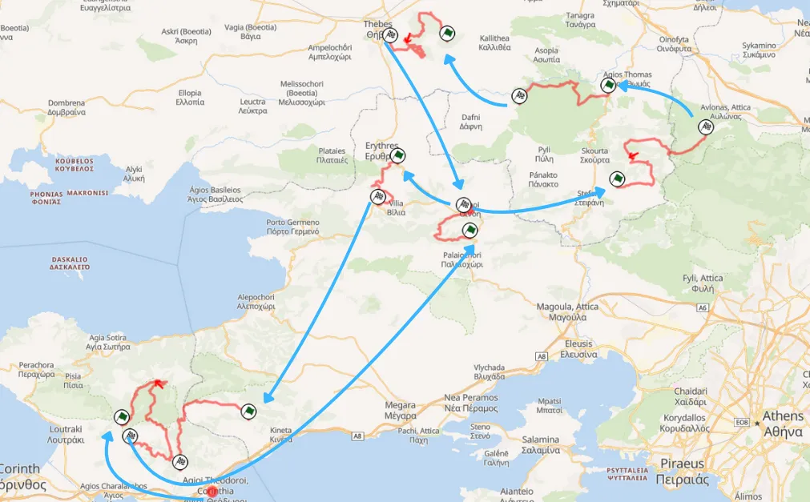
Route of Day 2 of the 1999 Acropolis Rally
Rally-Maps.com
Day 2 would see the crews start from Itea and move south back to Aghii Theodori. The merged Bauxites-Karoutes test would be the first of the day, after which Stromi, Drimea (ending in Mendenitsa this time), and Pavliani would follow. Gravia and the returning Livadia stage would be next, after which the crews would pass through Kitheronas and Kineta for a second time.
The last day of the rally included a second pass of Monday’s stages, minus the ones run on Tuesday.
Following the rally, teams and drivers expressed their concerns with the event’s route moving forward, deeming the stages in Loutraki and Attiki way too rough, especially for two passes.
For 2000, the rally HQ would be moved to Lilea in Parnassos. It would be the first time the rally would be held from Friday to Sunday, with day 1 being around Viotia and Loutraki, and Day 2 being in Fthiotida and Fokida. The rally’s Shakedown was on the Bauxites stage.
Day 1 would start with Skourta, Klidi, and Thiva, before heading south for Kineta, which was due to have the same route as 1999, but was shortened to 9.42km, and Aghii Theodori, which was a massive 31km long, combining last year's route with the one of Pissia from the 90s.
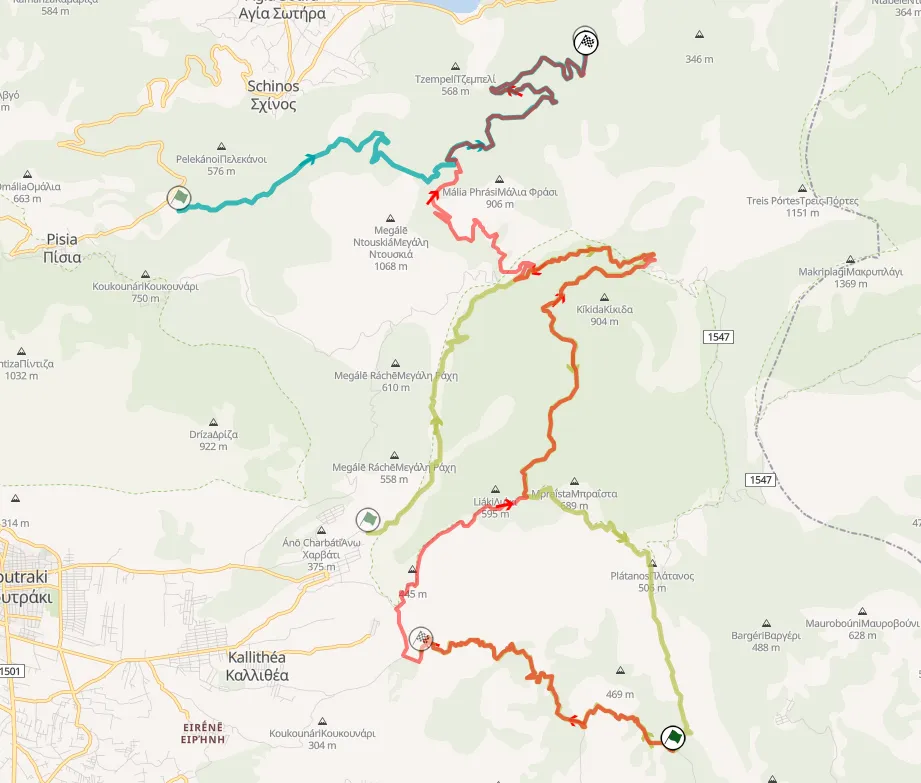
2000 Aghii Theodori (red) compared to the 1999 one (green) and the old Pissia stage (teal)
Rally-Maps.com
Day 2 would start with the returning Zeli stage, with Mendenitsa (1999 Drimea in reverse) next. After service, the crews would tackle Paleohori (1997 Eleftherohori in reverse), Gravia, which started from Mariolata this year, and finished in Eptalofos like 1997, and a new stage named Elatos. This stage was rough, but featured no access points, which is one of the reasons why it was not used again.
Zeli and Mendenitsa would be ran a second time before the end of the day.
Sunday would see Pavliani and Stromi being used twice in their usual configuration as well as the loop of Paleohori-Gravia-Elatos for a second time.
2001-2002: Only one Service Park in Lilea
2001 saw the Acropolis become the first rally in the WRC to have just one service park, in Lilea. Τhe ceremonial start would not be under the Parthenon, instead being moved to the Zapion Park.
This meant the Loutraki and Eastern Viotia stages were abandoned for 2001, with other stages in Fokida and Fthiotida replacing them. Bauxites was again the rally’s Shakedown on Wednesday.
Friday saw 6 stages, with the rally starting with Mendenitsa and Paleohori, which were the same as the year before. The Drimea section would not be used again after 2001. Pavliani and Inohori followed that, with the latter being Stromi from 2000 in reverse.
Elatia was going to be a massive 31km stage, using parts of Zeli and also Elatia-Rengini, but was cancelled. The leg would finish with a second pass through Mendenitsa.
Day 2 would start from Pavliani and then head south to Karoutes. After service, the cars would head to Viotia for Livadia and Stiri, the latter of which was shortened to just 3.59km due to falling rocks. Gravia was reversed and shortened for 2001, due to safety concerns being raised over the big drops the stage had at its start. Inohori and Karoutes would be the last two stages of the day.
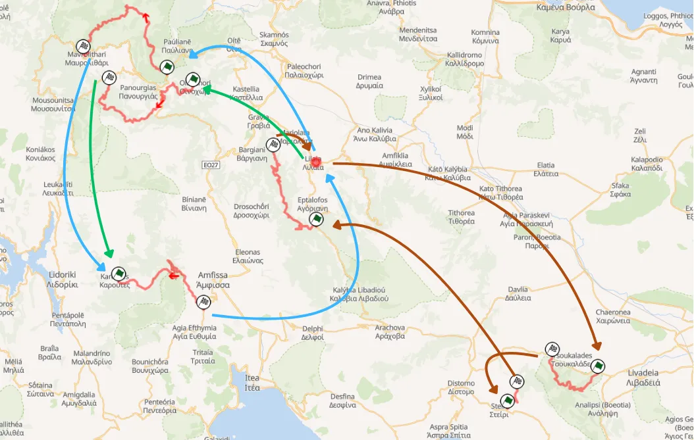
Map of Leg 2
Rally-Maps.com
Sunday would see the Livadia-Stiri-Gravia loop sandwiched between two runs of Amfiklia and Elatia-Rengini.
Amfiklia was a short new stage, and was one of the fastest of the rally. Elatia-Rengini was a massive 38km, and was the longest of the rally. It would use the “Pikes Peak” Elatia-Zeli section for the first time, with the road being fast and uphill, before turning left onto narrower and rougher roads, eventually joining the Rengini route, with the Nera watersplash and the many downhill hairpins that lead to the finish. At the last few meters, there was a dip that Colin McRae took flat and jumped over, en route to Acropolis victory number 4.
2002 would again be based in Lilea. The rally would be held entirely within Fthiotida and Fokida. It saw Karoutes and Bauxites both used in the rally, with Bauxites extended past the tarmac and finishing in Prosilio. There would also be a new stage, Drosohori, which would use parts of the Gravia stage. The start would be uphill and would be very technical and sinuous, having many hairpins. The shakedown was also new, using a road that serviced a quarry in Kastelia. It’s now part of the Inohori stage
2003-2005: Rally HQ is moved to Lamia, new Tarzan leg
2003 would be a special event, as it marked the 50th anniversary of the Acropolis Rally. To mark this occasion, the rally would head north of Lamia for the first time since 1997, and also include Tarzan and Agios Stefanos.
There would be yet another change of HQ, with the service park being moved to Lamia. The shakedown would also be new, and would be next to Lamia’s landfill in Nea Mangnisia.
Day 1 would start with Pavliani and Stromi, which finished in Kaloskopi for 2003, after the Inohori section was paved. Eleftherohori would round off the morning loop, with the stage starting from the village with the same name and finishing in Mendenitsa for the first time. This change was made due to the Paleohori section being very bad for cars on the second pass in 2002.
There would be two stages in the Elatia region, which would not share any sections unlike previous years. Rengini would be the classic Elatia-Rengini stage in reverse, and Elatia-Zeli would start with the Pikes Peak section and then turn left near the village of Zeli, but would then continue north to Karya, on a narrow and technical road, especially near the finish.
A second pass through Pavliani and Stromi would then follow, with the crews then going head to head in an SSS next to the old Service Park in Lilea. The first pass would be a big failure, as the stage had to be annulled due to the dust. The stage would be hosed down and salted for the second pass to combat the dust issue.
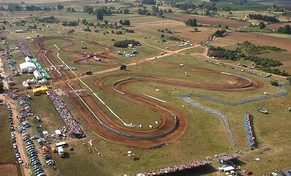
Aerial shot of the Lilea SSS
Rally.gr
Mendenitsa would be the first stage of Saturday (Eleftherohori with a different start and reversed) before a pass through Bauxites and the shortened Drosohori stage, which now used the old Gravia finish. Rengini and Elatia would be repeated, as would Bauxites and Drosohori.
Sunday saw two loops of three repeated stages north of Lamia. Dikastro would be a new stage just to the south of Tarzan. It would be uphill and narrow, with many slow sections. It was the slowest of the rally with an average speed of 68.4km/h. The cars would then head to Tarzan for the first time since 1994 (in the WRC). The start would be four kilometers south of Tarzan’s hut, and then continue to Giannitsou, using the same finish as 1994.
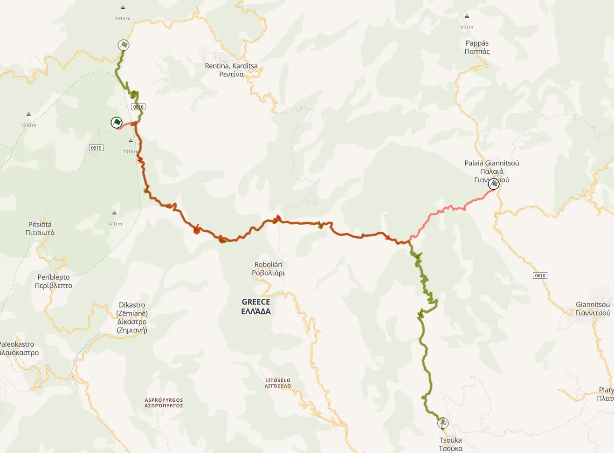
New Tarzan (red), compared with the classic Tarzan stage (green)
Rally-Maps.com
Agios Stefanos would be on mostly open roads and would be quite fast, finishing in the village of Grammeni.
For 2004 the rally would not visit Athens, instead it would start from Lilea for a first pass of the SSS. It would be the first instance of the "Super Rally" rule being used in the WRC.
The rally would use basically the same stages as 2003, with some modifications. Eleftherohori would only be run in one direction as a one-pass stage, Bauxites would not be in the itinerary, with the Amfissa stage used instead, starting after the tarmac and finishing in Prosilio. Dikastro and Tarzan would be merged into one, starting from Dikastro and ending in Giannitsou.
Styrfaka would be the only new stage of the rally, using parts of the Kalamaki stage from 1996, featuring two jumps just before the finish.
The 2005 edition of the rally is regarded by many as the best Acropolis ever. The rally would be shrunk to 350km of stages compared to the 370 of 2004, and would be forced to use the clover leaf format for multiple days for the first time in its history.
The stage that would make all the headlines would be that of the Super Special Stage in the Olympic Stadium in Athens. The organisers created a head to head stage inside the stadium where the Olympic Games were held the year before, and it was a resounding success, with the SSS being sold out, much to the drivers’ delight, who put on a great show for the 50k fans in attendance.
The rally proper would start on Friday with a loop of Eleftherohori, Rengini and Elatia-Zeli, run in the same configuration as 2004. Elatia-Zeli was shortened slightly from the finish, now being 32km long.
Saturday would feature two runs of 4 repeated stages. Koumaritsi was the old Ano Pavliani stage from the 90s, in reverse. It used a road that was generally fast and wide, going uphill at first before descending towards the village of Pavliani. Pavliani would be the next stage, in its classic configuration, with Stromi following. The last stage of the loop was Amfissa, after which the cars would make it back to service.
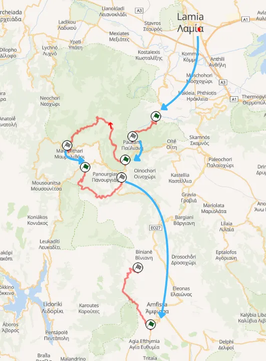
Leg 2 of the 2005 Acropolis Rally
Rally-Maps.com
The last day of the rally featured 4 stages, all one-pass. Dikastro would be the days opener, with Grammeni being a new stage, a combination of Agios Stefanos and Styrfaka from 2004. After service, there would be two essentially new stages. Pyrgos was the longest stage of the rally at 34.8km, with the last 21km last used in 1996 as part of SS Marmara. Perivoli was the last stage of the rally, and was also the slowest, with slow and technical sections throughout its route.
The 2005 Acropolis Rally was voted as the best rally in the WRC for that year, thanks to, but not only due to, the OAKA SSS.
Stages used the most from 1996 to 2005
Pavliani: 8 times
Eleftherohori: 5 times
Elatia: 5 times
Livadia: 5 times
Rengini: 5 times
Stromi: 5 times
Bauxites: 5 times (2 as Shakedown)
Percentage of entries that finished the rally
1996: 44.7%
1997: 56.4%
1998: 57.3%
1999: 44.3%
2000: 41.0%
2001: 42.7%
2002: 41.6%
2003: 44.6%
2004: 45.8%
2005: 61.4%